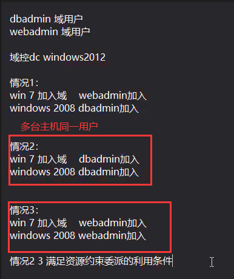

内网横向移动的九种方式
套件脚本 impacket 脚本利用
hash无法解出利用如下方式登录1
2
3wmiexec 135
psexec 445
winrm 5985
# IPC 远程登录 (明文)
1 | atexec.py atexec.exe(明文/hash) |
# WMI (明文 hash)
1 | wmiexec.py (明文hash) |
# SMB (明文 hash)
1 | PsExec64.exe(官网工具) smbexec.py (明文hash) |
# SMB 协议密码喷洒
1 | CrackMapExec 工具 |
# PTH 哈希传递
1 | (无SMB WMI协议情况就利用hash和普通登录一样加了一个名词) |
# PTT 票据传递
1 | 漏洞生成 MS14068漏洞 |
# PTK 密匙传递
1 | hahs失去作用尝试找出密匙key登录 |
# RDP (明文 hash)
1 | 开启3389端口 |
# WNC (票据 hash 明文)
1 | 开启5885端口 |
# Kerberos (票据破解)
1 | 导出票据离线破解这个加密块，恢复帐户的明文密码。 |
# 中继重放密码碰撞 (无明文无 hash)
1 | 拿下权限后无法抓取到密码和hash,拿当前登录的用户去做密码碰撞 |
# Inveigh 哈希钓鱼 (钓鱼拿 hash 破解得明文)
1 | 被控机器建立钓鱼网站,你在登录的情况下访问了得到当前hash值,再通过hash破解得到明文 |
# 非约束委派攻击 (钓鱼拿域控 hash)
1 | 已经受控制主机设置了非约束委派(域控访问了我,留下了痕迹,我伪造) |
# 资源约束委派 (多机器同一用户)
1 | 单台主机或多台主机使用同一个用户加入域内 |
